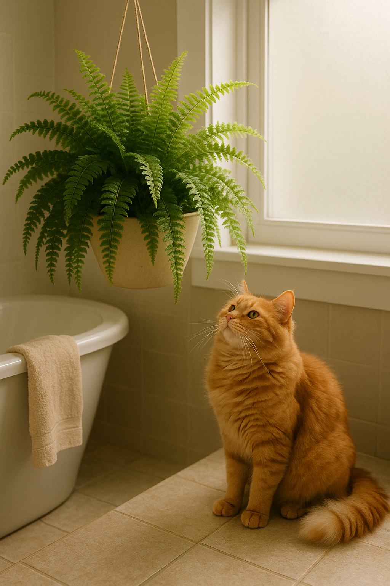

Samambaias: seguras, lindas e negligenciadas
Elas já foram o auge da decoração nos anos 80. Depois, caíram no esquecimento. Mas quem disse que as samambaias deixaram de ter seu valor? Elas continuam sendo uma das plantas mais adaptáveis, ornamentais e — o que poucos sabem — completamente seguras para gatos.
Enquanto muitas plantas tropicais encantam pela exuberância e assustam pela toxicidade, a Nephrolepis exaltata, também chamada de Samambaia de Boston, é puro charme sem riscos. Seus longos frondes verdes, pendentes e cheios de textura, dão um ar de floresta a qualquer canto da casa.
Essa samambaia gosta de sombra ou luz difusa e aprecia umidade. É uma planta ideal para banheiros claros ou salas bem ventiladas. Quando pendurada em suportes altos, forma verdadeiras cascatas verdes — um espetáculo vivo e sereno.
Para quem tem gatos, ela é um achado. Pode até virar uma caminha improvisada se seu felino resolver testá-la como ninho, mas ao menos não causará intoxicação. No máximo, exigirá uma poda se for "atacada" com carinho demais.
O segredo para mantê-la feliz? Solo levemente úmido, sem encharcar. Se possível, borrife suas folhas em dias secos. E lembre-se: apesar de parecer rústica, ela gosta de atenção. Folhas amareladas geralmente significam excesso de luz ou falta de água.
🌿 Uma samambaia bem cuidada pode viver muitos anos. E junto a um gato curioso, pode render cenas dignas de quadro — natureza e bichinho em total sintonia.
← Voltar para o blog